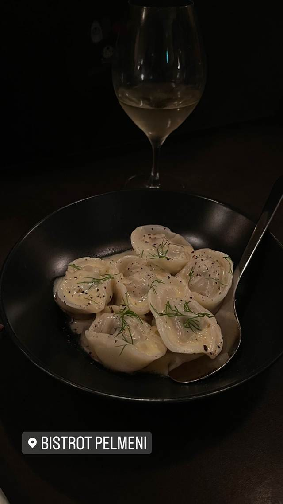

BISTROT PELMENI（ビストロ ペリメニ）
国産牛肉で作るロシアの水餃子ペリメニ専門ビストロ
BISTROT PELMENI
神泉にあるロシアの水餃子「ペリメニ」を主役にしたビストロ。国産牛肉と東北産の食材を使い、ナチュラルワインとともに提供する。
TRIVIA
豆知識
- ロシアの水餃子「ペリメニ」を専門に出すビストロは珍しい
REVIEWS
世間の評判
3.46食べログ
看板ペリメニと一人営業の接客
- 看板料理のペリメニ（ロシア風水餃子）の美味しさを評価する声が多い
- 1人で切り盛りしながらも丁寧なサービスを評価する声がある
- 席数が少なく予約が取りにくいという指摘もある
食べログ 口コミ235件
| 看板 | ペリメニ（ロシアの水餃子） |
|---|---|
| こだわり | 国産牛肉を使った手作りのペリメニ。肉・野菜は主に東北産の食材をオーナーが選定 |
| どこから | 都心 |
| 予算 | 夜 ¥6,000～¥7,999 |
| 場所 | 神泉 東京都渋谷区円山町10-14 |
| メモ | ワインリストを設けず、セラーから客が自らワインを選ぶスタイルでナチュラルワイン中心 |
食べたもの：ペリメニと白ワイン